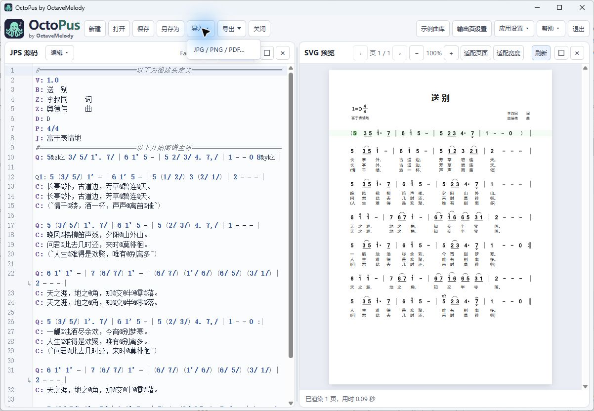
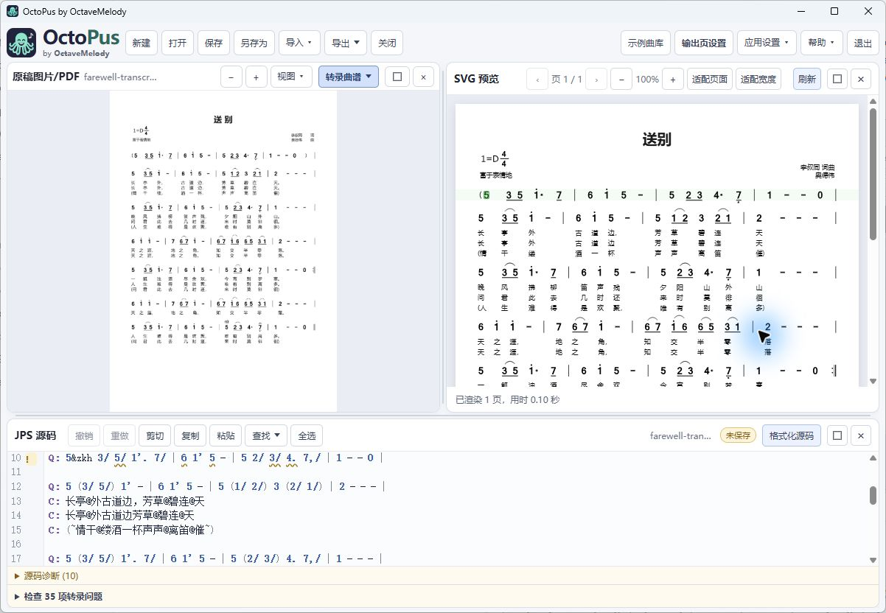
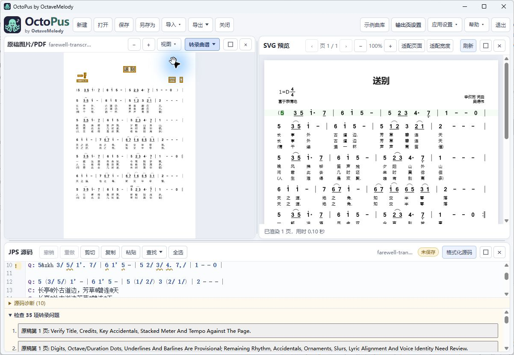
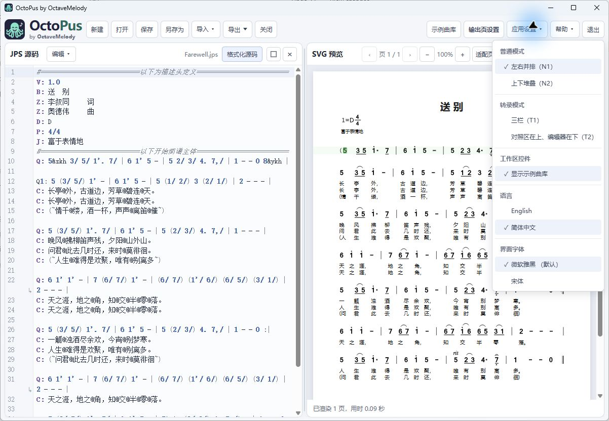
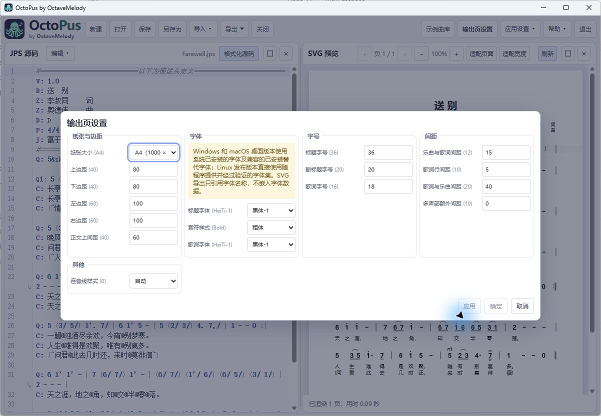
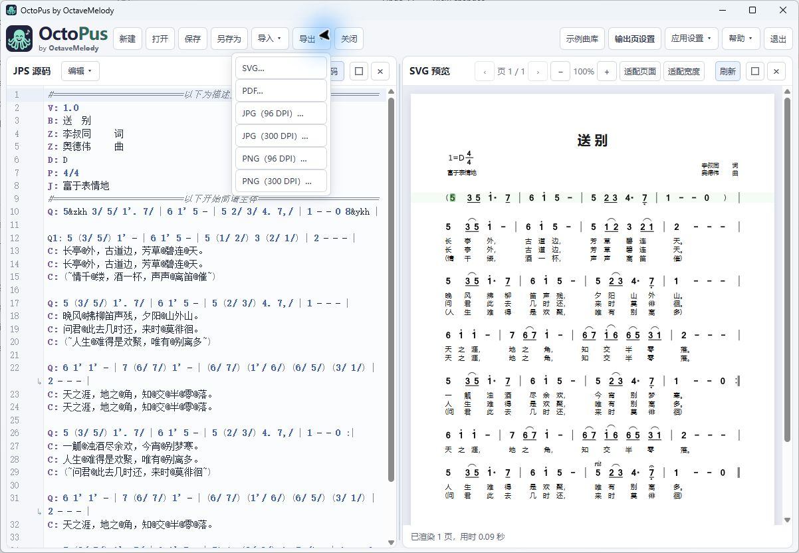

7. 预览、光标与导航
源码变化时预览自动更新。点击或移动源码光标会突出对应谱面位置，并将该行移向预览中央。点击预览音符或歌词只选择对应源码，不会自动移动预览；直接点击源码或用键盘移动会恢复跟随。仅具有唯一映射的元素可以定位；部分装饰或临时声部元素可能没有精确源码目标。
用 -/+ 缩放，适合页面显示整页，适合宽度按面板宽度阅读。翻页按钮或视图菜单用于切换渲染页面；刷新重新渲染。点击预览下方诊断可跳到相关源码。渲染期间可能仍显示旧预览；导出前应等待完成并处理相关提示。
用 Tab 聚焦预览后，可通过 Page Up / Page Down 翻页，通过 Ctrl+鼠标滚轮 缩放。状态栏在完成后显示页数及渲染用时；多页渲染时显示进度。
8. 原稿图片/PDF 与转录
选择导入 → JPG / PNG / PDF…，或将单个 PNG、JPG/JPEG、PDF 拖入原稿图片/PDF 面板。已有原稿时会询问替换原稿或取消。另一次导入、替换选择、恢复、保存、转录或冲突对话框正在进行时不能导入。拖入不支持的文件或多个文件会被拒绝。

拖动原稿可平移；适合、缩放及旋转 90° 用于查看。旋转只改变显示方向，不修改原文件。PDF 支持翻页。关闭面板仅隐藏该面板，保留托管原稿；选择转录布局可重新打开。输入限制包括每个图片/PDF 不超过 100 MiB、PDF/原稿页不超过 200 页、每个解码图片或 PDF 页不超过四千万像素。损坏、加密或不支持的文件可能失败；出现大小或页数限制提示时请缩减输入。
- 转录新建：生成暂定的新乐谱；替换当前乐谱前先处理未保存提示。
- 转录追加：向当前源码添加识别内容，必要时加分页边界；非空乐谱不重复加入草稿描述头。撤销可回退插入。
- PDF 按整份文档转录，不只处理当前显示页。阅读提示并逐页对照原稿；需要编辑空间时可折叠提示。
- 手动修正不确定结果。保存/导出前核对八度点、减时线、附点、变音、倚音、连音线、跳房子和歌词。

向非空乐谱插入前，追加会将草稿中每个非空的大写 D/P/J 描述头与当前乐谱比对。若发现明确冲突或无法核对（例如目标乐谱缺少相应字段，或音乐行内存在含义不明确的 D/P/J 指示），程序会阻止插入并建议使用“转录新建”。程序不会推断草稿中未写出的描述头，也不会补造调性、拍号或速度默认值。描述头一致不代表音乐兼容；仍须对照原稿校对。
OCR 模型
转录使用内置的默认配置：PP-OCRv6 Small 文本检测与识别模型，以及共用的 PP-OCRv4 Mobile 方向分类器。该配置支持中英文并可离线使用。转录新建、转录追加以及各个裁剪区域和 PDF 页面都使用同一配置；OCR 配置不会修改乐谱或写入保存的 JPS。
校对不确定的草稿
PDF 转录会显示识别进度，并提供取消转录按钮。取消后任务停止，当前乐谱保留，未完成的草稿不会插入。转录完成后，展开检查列表并选择一项。原稿面板会打开对应页、放大相关区域并用琥珀色框标出位置；若提示能唯一对应到源码音符，也会选中该音符。数字匹配度偏低时，草稿会显示警告标记。匹配度是分类器的比较分数，并非校准概率，也不能保证识别正确。

修改源码后，失效的音符范围标记会清除，原稿区域仍可供校对。若原稿被改名、移除或替换，旧提示无法再定位对应原稿。首次使用提示会介绍如何拖入扫描件/PDF 并生成草稿，也可将它关闭。
程序会保守过滤乐谱和歌词区域之外的重复页眉、页脚及孤立页码。检查项还可能提示续页拍号变化、需手动处理的调性或速度变化、尚未处理的记谱指示，以及明显的小节或声部时值不一致。歌词项会列出已确认歌词或槽位与重新渲染结果的差异，需要人工核对；它不会改写歌词，也不能证明 OCR 正确。渲染结果检查会比较音符数量、曲行和间距。这些检查都不会改写不确定音符，也不能证明草稿完整或记谱正确。请继续对照原稿逐项核对。
9. 模式、布局与聚焦
| 模式/布局 | 用途 |
|---|---|
| 普通 N1 | 源码和预览左右排列。 |
| 普通 N2 | 源码和预览上下排列。 |
| 转录 T1 | 原稿、源码及预览三栏排列。 |
| 转录 T2 | 原稿和预览在上，源码编辑器在下。 |
拖动面板之间的分隔条即可调整大小：竖向分隔条左右移动，横向分隔条上下移动。T1 中每条分隔条只调整相邻两个面板。每种布局分别记住大小。键盘操作时，用 Tab 聚焦分隔条，再按相应方向键（按住 Shift 可加大步长）；Home/End 调整到最小/最大尺寸。最小尺寸限制可避免面板消失。点击面板的最大化按钮可临时放大该面板，还原按钮恢复布局。关闭面板会保留其内容；在应用设置中选择布局可重新打开对应面板。所有面板关闭后，也可通过该菜单继续。面板宽度改变时控件自动调整。F11 切换窗口最大化状态；工具栏不另设最大化按钮。

10. 页面设置与字体
页面设置分组提供纸张（A4/A5）、边距及正文起始位置；标题/歌词字体及音符样式；标题/副标题/歌词字号；曲到词、词到词、词到曲及声部间距；连音线形状（自动、圆弧、平顶）。字号和边距使用渲染器单位，并非毫米。应用更新乐谱并保持窗口打开；确定应用并关闭；取消放弃尚未应用的草稿修改，不会撤回已经应用的修改。请保存乐谱以保留设置。

| 选项 | Windows 已安装字族 | macOS 已安装字族 | Linux 内置字族 |
|---|---|---|---|
| HeiTi-1（默认） | Microsoft YaHei | PingFang SC | MiSans Regular |
| HeiTi-2 | SimHei | Heiti SC | LXGW Neo XiHei |
| SongTi | SimSun | Songti SC | SimZhiSong |
| KaiTi | KaiTi | Kaiti SC | LXGW WenKai Regular |
| FangSong | FangSong | STFangsong | Zhuque Fangsong Regular |
界面语言和界面字体在应用设置中选择，首次使用默认简体中文和平台默认字体，之后会保存你的选择（默认字体见第 4 节）。界面字体只影响控件和菜单。页面设置负责选择乐谱字体角色及样式，导出也使用这些角色。Windows 和 macOS 会优先使用每个角色对应的系统字体；首选字体缺失时，可改用兼容的已安装字体。打开帮助 → 字体状态查看官方安装说明，或点击重新检查。Windows 链接到微软补充字体指南，macOS 链接到 Apple 字体册。无需另装字体也可继续使用现有替代项；如果已安装字体都不含某个字符，该字符仍可能无法显示。Windows/macOS 桌面包不包含 13 种乐谱字体。Linux AppImage 使用随程序提供并经过验证的字体集；其中 Noto 字体用于补齐缺字，但无法覆盖所有 Unicode 字符，Latin Arial 类文本使用 Liberation Sans。音符样式有常规、斜体和粗体，旧版 HeiTi 对应 HeiTi-2。字体替代可能改变间距。微软字体不随软件分发。MiSans 使用小米的独立许可，Linux 乐谱字体的其他许可包括 OFL 和 IPA。本手册另附少量 Noto Sans SC 子集。微软字体安装说明 · Apple 字体册说明。
图片和扫描版 PDF 使用内置的默认 OCR 配置，通过本地 RapidOCR + ONNX 转录。在原稿图片/PDF 面板中点击转录生成 JPS 草稿，再检查源码和问题标记。
11. 导出与 Windows 便携版使用
选择导出格式（SVG、PDF、PNG 或 JPG，96 或 300 DPI）及保存位置。PDF 生成一份多页文档，SVG、PNG 和 JPG 则按页生成文件。300 DPI 适合印刷。分享导出文件前，先保存可继续编辑的 JPS 原稿。PDF 会嵌入字体，PNG 无损保存像素，JPEG 会压缩像素，SVG 保留矢量内容。外部 SVG 查看器仍需相应字体，请在计划使用的查看器中检查结果。独立的 Python ReportLab PDF 路径无法嵌入 CFF 轮廓系统字体，会改用角色对应的替代字体；这项限制不适用于桌面版原生导出。

使用 Windows 便携 ZIP 时，请保持解压后的文件夹完整，包括 engine、examples 和 docs，并从该文件夹运行 octopus.exe。其中已内置引擎，无需另装 Python。Windows 仍需 WebView2。
通过 Python 命令行批量导出
Python 命令行可将一组 JPS 合并为一份 PDF，或按乐谱分别导出。文件按路径排序处理；递归导出保留子目录。已有输出不会被覆盖。某个源文件失败时会报告错误，并继续处理其他有效源文件；请检查退出状态和输出摘要。
uv run --locked octopus batch-export /path/to/scores --out combined.pdf
uv run --locked octopus batch-export /path/to/scores --out-dir exported --format pdf --recursive
uv run --locked octopus batch-export /path/to/scores --out-dir images --format png --dpi 300这些命令使用 ENVIRONMENT.md 所述的 Python 安装环境，不能作为便携版桌面启动程序的参数使用。
12. 快捷键与帮助
| 快捷键 | 操作 |
|---|---|
| Ctrl/Cmd+N | 新建乐谱 |
| Ctrl/Cmd+O | 打开乐谱 |
| Ctrl/Cmd+S / Shift+S | 保存 / 另存为 |
| Ctrl/Cmd+Z | 撤销 |
| Ctrl/Cmd+Y 或 Shift+Z | 重做 |
| Ctrl/Cmd+X / C / V / A | 在编辑器中剪切 / 复制 / 粘贴 / 全选 |
| Ctrl/Cmd+F | 编辑器查找 |
| Ctrl+H（Windows/Linux）、Cmd+Option+F（macOS） | 编辑器替换 |
| Page Up / Page Down；Ctrl+滚轮 | 已聚焦预览的翻页 / 缩放 |
| F11 | 切换窗口最大化 |
| 方向键 / Home / End / Escape | 导航菜单，Escape 关闭。 |
模态对话框打开或表单控件获得焦点时，部分快捷键会停用。帮助菜单包括快速上手、用户手册、报告问题、反馈建议、检查更新和关于章鱼简谱。快速上手和用户手册会按当前界面语言在独立窗口中打开；桌面版点击“下载 PDF”会弹出保存对话框，浏览器则直接下载。报告问题会打开项目 Issues 页，反馈建议会打开 Pull Requests 页。检查更新会比较 GitHub 上最新的稳定版，并分别说明版本信息不可用、标签不熟悉或网络出错；它不会安装更新。关于窗口和品牌标识都链接到项目主页。
关于。窗口显示手动设置的 SemVer 应用版本、章鱼简谱产品历史中的提交数、构建所用产品提交的短 SHA，以及标语 OctoPus: Octave + Jianpu for editing numbered-notation scores. 章鱼简谱：玩转八度，轻松制谱。 致谢包括番茄简谱的 JPS 格式与渲染兼容目标、RapidOCR（Apache-2.0）、ONNX Runtime（MIT），以及 Linux 乐谱字体集和离线手册 Noto Sans SC 子集的作者。字体集包括 MiSans、LXGW Neo XiHei、SimZhiSong、LXGW WenKai、Zhuque Fangsong、Noto Sans SC、Noto Serif SC 和 Liberation Sans。Windows/macOS 桌面版使用系统字体，不随程序提供这组乐谱字体。章鱼简谱按 GNU 通用公共许可证第 3 版发布，免费提供；作者不提供任何形式的担保，也不对使用本软件造成的直接或间接损失承担责任。随程序附带资源的第三方许可均完整保留。规划中的功能见第 2 节。